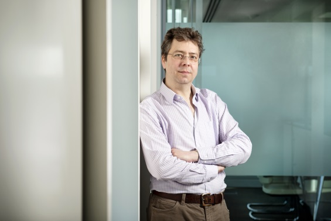

 I am an Engineering Manager at Facebook in London, supporting the Hack London team and the Facebook Languages Research (FLaRe) team in Paris.
My research ranges from proof theory and categorical logic, through semantics of programming languages and static analyses, to programming language design and compiler implementation. My thesis was on strictness analysis and I have since worked on topics that include term calculi and categorical models for linear logic, MLj and SML.NET (optimizing compilers from SML to the JVM and .NET with extensions for interlanguage working), Polyphonic C#/Cω (C# with join-calculus concurrency and XML/relational data constructs), monads and effect systems, models for dynamic allocation, compositional compiler correctness, mechanically formalized logics for reasoning about machine code programs, and reactive programming.
I have a degree in Mathematics and a PhD in Computer Science, both from the University of Cambridge, and am a Fellow Commoner of Queens' College, where I was previously a Bye-Fellow. Before joining Facebook, I spent 18 years at Microsoft Research in Cambridge. Prior to that, I was an SERC Research Fellow, an RA on an EU ESPRIT project and Senior Research Scientist at Persimmon IT, Inc. I have served as Editor-in-Chief of Computer Languages, Systems and Structures (Elsevier) and am currently a member of the Editorial Boards of the Journal of Functional Programming (CUP) and Logical Methods in Computer Science.